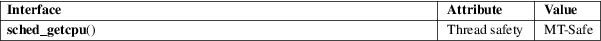

sched_getcpu − determine CPU on which the calling thread is running
Standard C library (libc, −lc)
#include <sched.h>
int sched_getcpu(void);
Feature Test Macro Requirements for glibc (see feature_test_macros(7)):
sched_getcpu():
Since glibc 2.14:
_GNU_SOURCE
Before glibc 2.14:
_BSD_SOURCE || _SVID_SOURCE
/* _GNU_SOURCE also suffices */
sched_getcpu() returns the number of the CPU on which the calling thread is currently executing.
On success, sched_getcpu() returns a nonnegative CPU number. On error, −1 is returned and errno is set to indicate the error.
|
ENOSYS |
This kernel does not implement getcpu(2). |
For an explanation of the terms used in this section, see attributes(7).

GNU.
glibc 2.6.
The call
cpu = sched_getcpu();
is equivalent to the following getcpu(2) call:
int c, s;
s = getcpu(&c, NULL, NULL);
cpu = (s == −1) ? s : c;
getcpu(2), sched(7)